2003.07.05–07 河内スタヂオ録音
Vintage
北村英治 with スコット・ハミルトン、エディ・ヒギンズ北村英治 (cl) / Scott Hamilton (ts) / Eddie Higgins (p) / 遠山晃司 (b)
「各音像にシャープなフォーカスでスッキリと分離させたクリーンな録音。」stereo 2004年1月号
About the Album
作品紹介
「VINTAGE」
音色は深く熟成 コクのあるまろやかジャズ
北村英治(cl)
スコット・ハミルトン(ts) エディ・ヒギンズ(ｐ)
遠山晃司(b)
￥3,000(税込み）
購入先はこちら>>> 北村英治HP
［曲目］
1. イッツ・ビーン・ア・ロングタイム 2. 恋人よ我に帰れ 3. ナイチンゲイル・サング・イン・バークリースクエア 4. 我が心のジョージア 5. 枯葉 6. マチルダ 7. LOVE 8. 古い十字架 9. サムデイ・スイート・ハート 10. メモリーズ・オブ・ユー 11. バック・ホーム・アゲイン・イン・インディアナ
昨年久しぶりでスコット・ハミルトンと共演した。コンサートの後一緒に食事をしながら、私と初めての出会いの話に及んだ。彼は実に良く覚えて居て、あれは1979年で、彼にとっても思い出に残るレコーディングだったと話して呉れた。「もしチャンスが有ったら又何かやりたいね。」と云う話になった。ギンギンで無く心の温まる様な雰囲気のものをやって見ようかと意気投合しこのレコーディングをする事にした。
スコット・ハミルトンは若くしてデビューし、すぐ世界から注目されスターとしての地位を保ちつつ今日に及んで居る。ただひたすら素晴らしい音色とフィーリングでスコット・ハミルトンの世界を繰り広げ、世界中の人達に愛されて居る。現在の彼のプレイは正に熟成されて居ると云えよう。
この話が持ち上がってから私はメンバーの構成を考えて見た。スコットは私に任せると云って居るが責任は重大である。決めかねた私は再度スコットに相談し、ピアノはエディ・ヒギンズ氏にお願い出来ればと云うことになった。スコットが丁度6月にエディ・ヒギンズと来日するので、スケジュールをプロモーターの西蔭氏に打診して、レコーディングの話をした所、西蔭氏が「エディさえOKならスケジュールを空ける様にして、僕も協力するよ。」と云って呉れたのでスコットを通じてエディに連絡をとってもらった。私にとっても願ってもない事なので、これが実現すればきっと大勢の人達に喜んでもらえるCDが出来るだろうと大いに胸をふくらませた。ピアニストのエディ・ヒギンズは円熟した最高のプレイを聴かせてくれるのでこのコンビは大いに期待の出来るものだと思った。有り難い事にエディ・ヒギンズからの返事もOKが出てこのレコーディングが出来た訳だ。始めにスコットと話した様にソフトな感じのものをやりたかったのでドラムは無しで遠山晃司のベースだけにした。彼もベテランの音楽を知り尽くした最高のベーシストである。きっとエディもスコットも気に入って呉れると思った。
スコットにスタジオは秋田の大潟村だと話したら是非家族も同行したいと云うので、たまにしか会えない奥方や子供達と一緒に過ごせるのならばと私も大賛成した。そのせいもあってかレコーディングでもスコットのプレイは実に温かいものを感じさせた。勿論エディ・ヒギンズと遠山晃司も最高のプレイをして呉れた。時間に追われてと云う感じがないので気楽に良いプレイをしてもらえたと思う。それだけに味のあるスコットやエディの最高のものが随所に光って聞くことが出来る。やはり熟成された人達だからかもしれない。
レコーディングエンジニアの河内伸介も初めて接するグレイトな二人の音を生で聞き、自分の目の前での演奏にただただ感激をして居た様であったが、実によく音を録り、まとめて呉れた。
余談になるが、食事担当は私で、皆に私の料理を味わってもらったが、全部気に入って呉れた事はとても嬉しかった。日本そばから始まり、ポークビーンズ、ラムチャップ、海の幸オリーブ焼き等々。エディ・ヒギンズ曰く、「エイジは素晴らしかった、特に料理がね。」
*stereo 2004年1月号
で今月の優秀録音9.6点
クラリネットの名手、北村英治の新作はドラム・レス・トリオにスコット・ハミルトンのサックスが加わる編成。収録は秋田の河内スタヂオで、各音像にシャープなフォーカスでスッキリと分離させたクリーンな録音。ピアノ及びベースのリズム系を控えめに、メロディ系をクローズ・アップした独特のパターン。
スイングジャーナル2004年3月号 録音評で
今月のベスト・アルバムに選ばれました。
★★★★
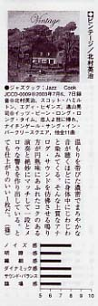
温もりを帯びた濃密でまろやかな音が聴くほどに身体中にじわじわと染みてくる。
そんな上質なアナログ・サウンドを彷彿させる鳴り方が円熟味にあふれたコクのある演奏と絶妙にマッチして一段とmメロウな響きを作り出している。
とても仕上がりのいい一枚だ。
スイングジャーナル2004年3月号「2月の新譜ディスク録音評」 より
Recording Report
レコーディングレポート
北村英治 with
Eddie Higgins Scott Hamilton 遠山 晃司
レコーディングレポート7/5～7 2003
レコーディングの写真集↓こちらをクリックして下さい
♪Recording photos
（北村英治さんホームページへリンク）
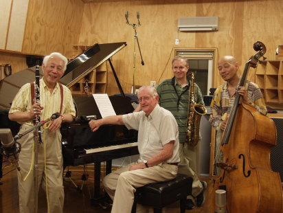
今年の２月頃北村さんの事務所から今年も７月頃にレコーディングをしたいのでよろしくとの電話がかかってきた.
「そりゃもう私は何があってもやらせてもらいますけど今年はどなたと？」
『はい、今年はｔｓにScott Hamilton さん、PianoにEddie Higgins さん、Bass に遠山 晃司さんでドラムレスでやりたいのですけど・・・』
ひえ～！、す、スコットハミルトン！ １９歳でデビューしてから今までずっとベンウエブスター的スタイルを一貫してまもり続けConcord Recordsの看板スターさんのスコットハミルトン さんに最近Venus Records から立て続けにゴールドディスクを出されている Eddie Higgins さんですか？私は去年このお二人を見るために青森県南郷村まで行きましたよ！
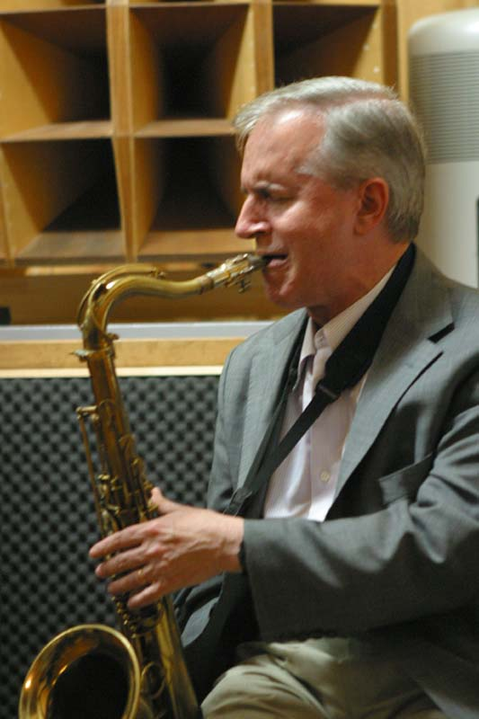
でも待てよ、よーく考えてみたらConcord といいVenus といいどちらも高品位な録音で有名なレーベルですよ。私はConcord のエンジニアのPhil Edwards さんの音が大好きであこがれてますよ！あのサウンドに勝てるような録音はチョット・・・ムリ、でも録音をする者としたら北村さんにこのお二人に遠山さん・・・、こんな素晴らしいソースを録音出来るなんて経験は２度と無いだろうし・・・、もうこうなったら Concord でもVenus でもない河内スタヂオサウンドで開き直ってやるしかない！と覚悟を決めて引き受けることにしました。
ネットで Scott Hamilton さんを検索したらあるLive House でのリポートが載っており、拝見すると60人足らずのお店で生音で演奏するのにスコットさんだけPAマイクを要求し、またサウンドチェックにかなりNGを出して挙げ句の果てに自分でイコライザーを調整し始め・・・、とありまたそのお店のピアノの上に置いてあったSaxを調律の方が調律をするためにSaxをいすの上に置いたとたん（何で勝手に楽器にさわったんだ！）ってものすごい勢いで怒った、とか書いてあったので、当日は調律師を含め勝手に楽器にはさわらない事！と言うことで秋田空港に友人の堤君と迎えに行きました。
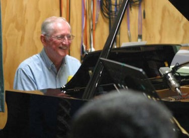
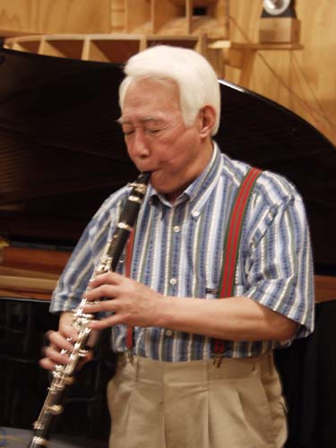
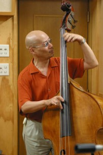
秋田空港で待っていると北村さんがニコニコしながら（今年もよろしくね）と１年ぶりの再会。
そこでスコットさんエディさんを紹介していただいた。スコットさんはファミリーで来られ（奥様は日本の方でお子様二人と一緒でした）にこにこしてとても優しそうな感じ(ヨカッタ) Saxの音から想像するより小柄な人でした。
エディさんは大きくてとっても上品な老紳士と言ったところ、B の遠山さんはずっと昔八城一夫さん（ｐ）のトリオを録音させていただいたことがありその事を覚えていただいていて久しぶりの再会となりました。
１時間足らずで我が家に到着、遠山さんの楽器をスタジオに搬入しみんなで食事をとスパゲッティ、カレー（うちのカミさんが仕込んでいた）、そば、どれにしますか？と聞くと外人さんお二人はそば！との事お二人とも日本食がお好きだそうだ。
なら北村さんが“つゆを作るよ！”とお湯を沸かし鰹と昆布でだしを取り始めた、今回のメンバーで最年長の北村さんだが相変わらず疲れを知らないというかはつらつとしておられる。
みんなそれぞれ食事が終わると下のスタジオに移動してホテルにチェックインの前に少し音を出そうということになり下のスタジオに移動、もちろん私は前の日からマイクをセッティングしていつでも音が出るようにしていたので、すぐにサウンドチェックすることが出来たのだけど私は少し早まってしまった。
録音する前からできあがりの音をイメージしてしまったのだ。私はコンコードのPhil Edwardsさんが録音したRAY BROWN TRIOのSOULAR ENERGYのレイブラウンみたいなスチールの弦がはじける音を生々しくとらえた音にしたくて遠山さんの生音をあまり確認しないまま調整室に入り、卓に立ち上げ出てきた音を聴くとなんだかしっくり来ない音になってしまった。
遠山さんにその事を話してみんながホテルにチェックインするのに遠山さんは残ってくれて私とじっくりサウンドチェックをマイクの選択からやっていただいた。
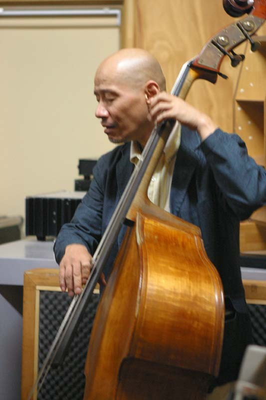
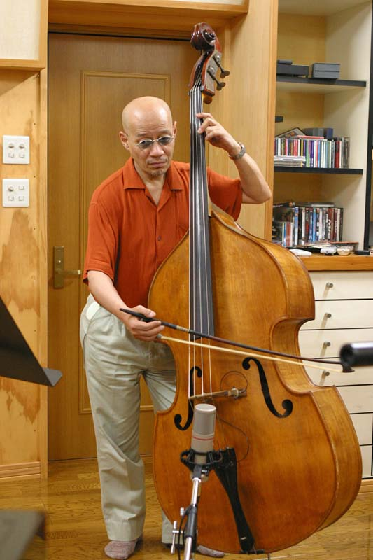
私は遠山さんのベースの前に座りゆっくりと生の音を聴かせていただいた。
遠山さんのサウンドはピラストロというドイツのメーカーのオブリガートという弦でガット弦ではないが音はガット弦の柔らかくて図太い音だった、録音した音を遠山さんにも確認していただきサウンドチェック終了、それにしても遠山さんが日本人でよかった（私の英語力では・・・）
今回少しあせってしまい生音をあまり確認しないで録音してしまった、とりあえず生音をしっかり聴いてそれから録音を始めるという基本的なことを守らなければいけないと再確認した。
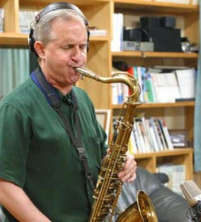
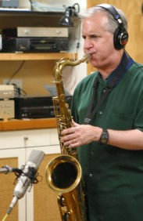
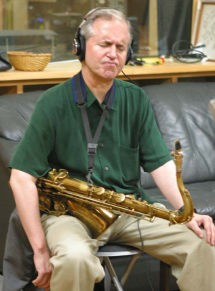
しばらくしてメンバーがホテルから帰ってきた。そこでスコットさんが自分にモニターのヘッドホンを用意してくれとの要望、はて？録音のセッティングは各楽器ブースに入らないでピアノを囲むようにメンバーかなりくっついたセッティングにしたのでみんなの音は聞こえるはず・・・、でもすぐにヘッドホンモニターを用意した。
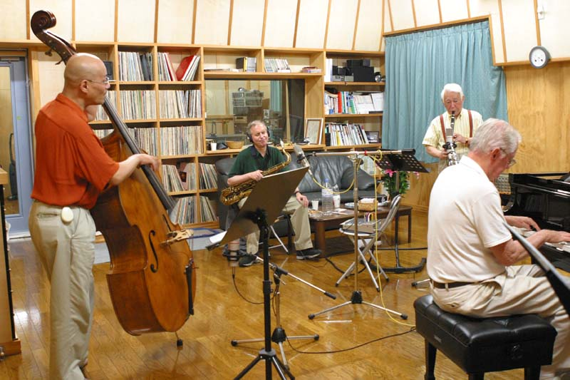
さあ、一曲目の録音が始まったらその意味が分かった、彼はマイクの使い方が非常にうまいのだ。
常にマイクを通した自分の音を聴きながらある時はマイクとぶつかりそうなくらいそばまで近づきオンマイクの効果を出し、またあるときは離れて楽器全体の鳴りの音を拾う。
マイクに近づいて“スカスカスカ”ってやった時にうわ～Scott Hamilton サウンドだ！と喜んでしまった。上で書いたLive Houseでマイクを要求したと言う意味が分かった。あれは別に自分の音を大きくしたくてPAを使ったのではなくて効果的にマイクを使いたかったのだと思った。
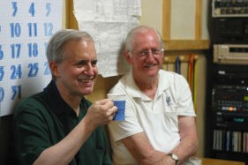
一曲録音してスコットさんが調整室に入ってこられて音を聴きたいと！ 緊張しながらPlay Back し聴いていただくと“Saxの音はGoodだ！”と言っていただいてホッとしたそれ以降音のことはほとんど言われなかった。
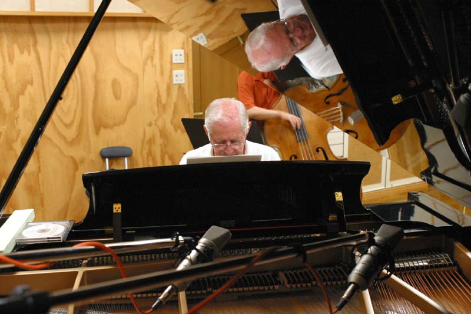
ピアノのエディさんは最初あまり会話もしなかったし静かにピアノに向かって弾いておられた、それにしても凄いテクニックだ！いつもVenusで聴いていたが曲によってはもっと昔のVee Jay時代の熱い感じでバリバリ弾いたりして感激した！
またバッキングが何というか控えめだけどまたうまい！
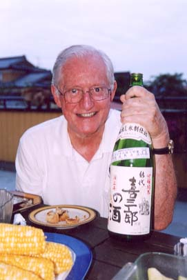
２日目になって一緒に食事をしたりお酒を飲んだり（日本酒がお好きなのだ）して少しずつ話をするととっても優しくて紳士で素晴らしい人だというのが分かった（少しシャイな方のだ）
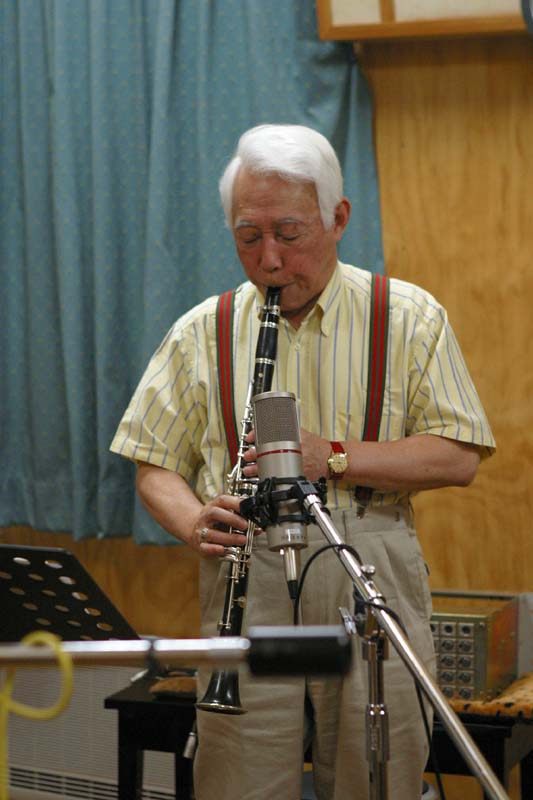
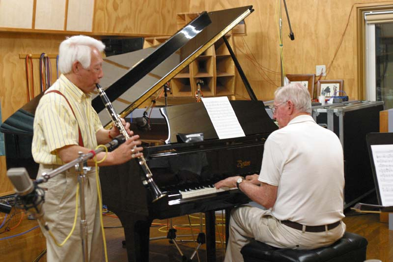
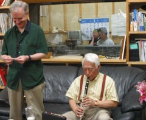
北村さんはもうこれで５枚目のCDの録音でお互いに感じはつかめている。
何にも言わないけど“頼んだよ！”って伝わってくる。
遠山さんの演奏はさすがに日本を代表するプレーヤーだ。音といいスピード感といいこれだけの一流のメンバーに一歩も引けを取らない素晴らしい演奏だ。
これだけのメンバーの録音はさすがにほとんどの曲がTake １でOK、CDに入りきれなくてボツにした曲も入れても２日間で回したテープは２時間程度だった。
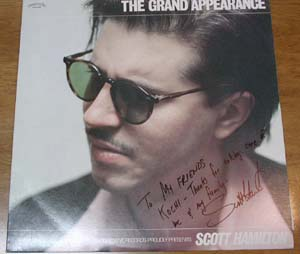
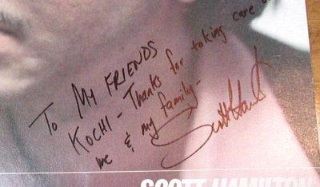
Scott さんに レコードにサインをしていただきました。 嬉しいメッセージを書いてくれました。
アメリカに戻った Eddi さんから サイン入りCDと手紙をいただきました。
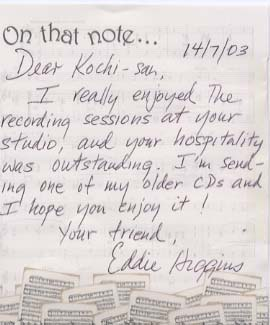
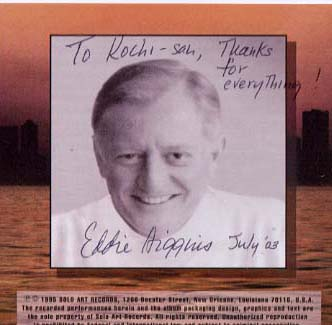
このお二人に自分の持っているレコードとCDにサインしてもらった。ちなみに私はけっこうな数の北村さんのレコードCDを持っているがまだ北村さんにサインはしていただいてない。また来年も会える（会いたい）と思ってサインはいただいていない。なんかサインしていただくのがこわいのだ。